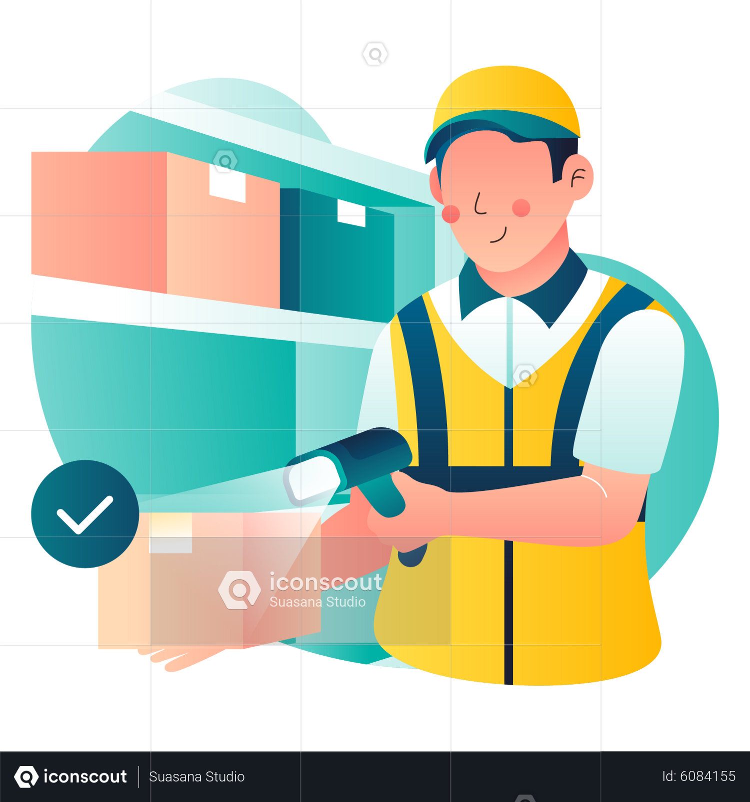

Estación Surtido
- El surtidor revisa su pantalla de asignación, cuando ve que ya tiene asignado empieza su surtido.
- El surtidor revisa que coincida la ubicación contra el UPC, lo escanea y se le genera la guía.
- Una vez que se escanea se imprime la guía y se pega del lado de la caja donde se encuentra el UPC físico.
- El asociado debe de terminar su Trip.

Surtiendo Pedido